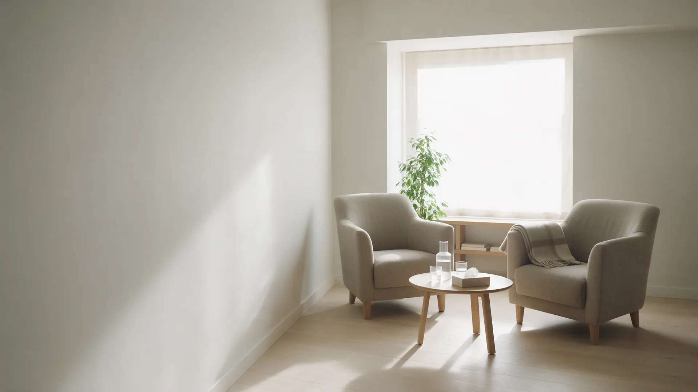
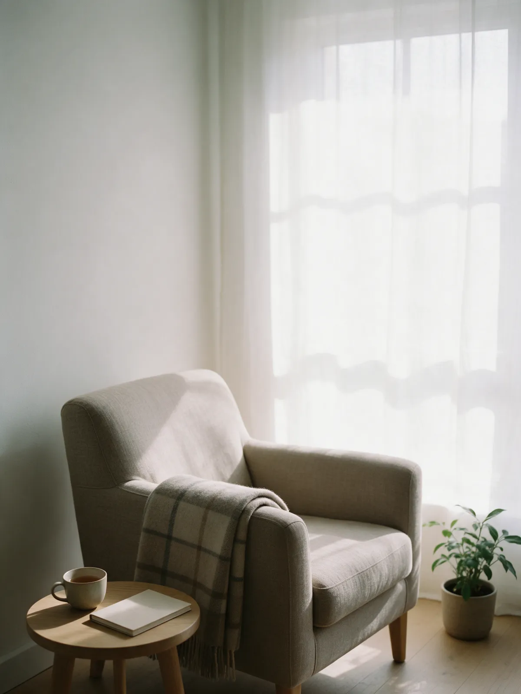
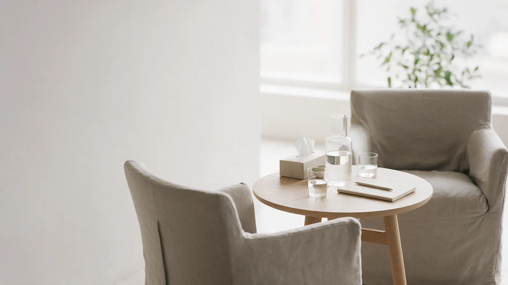
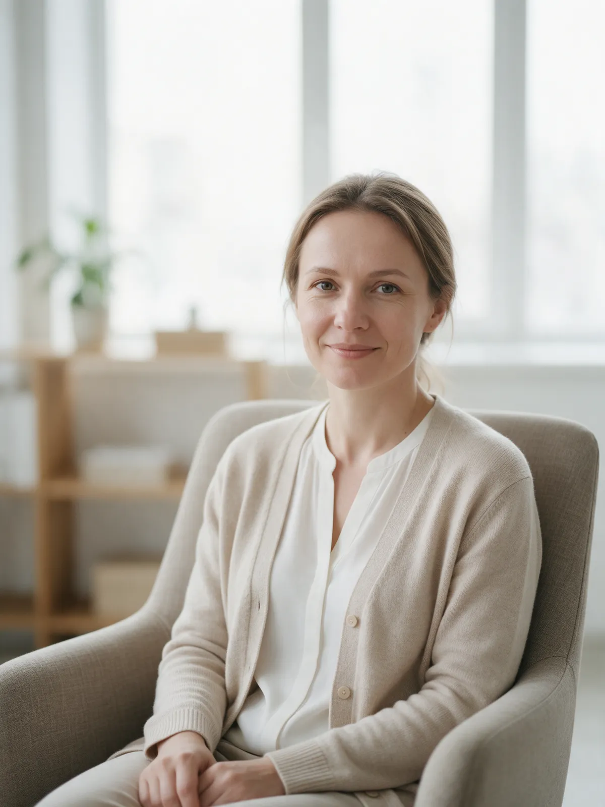
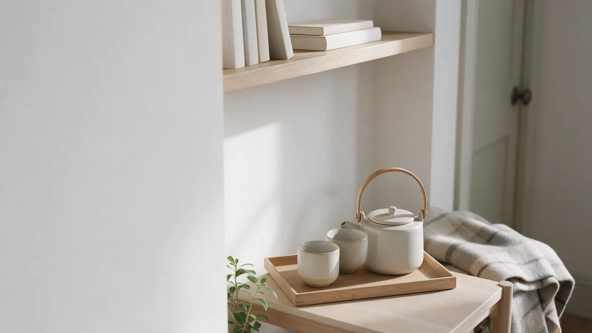
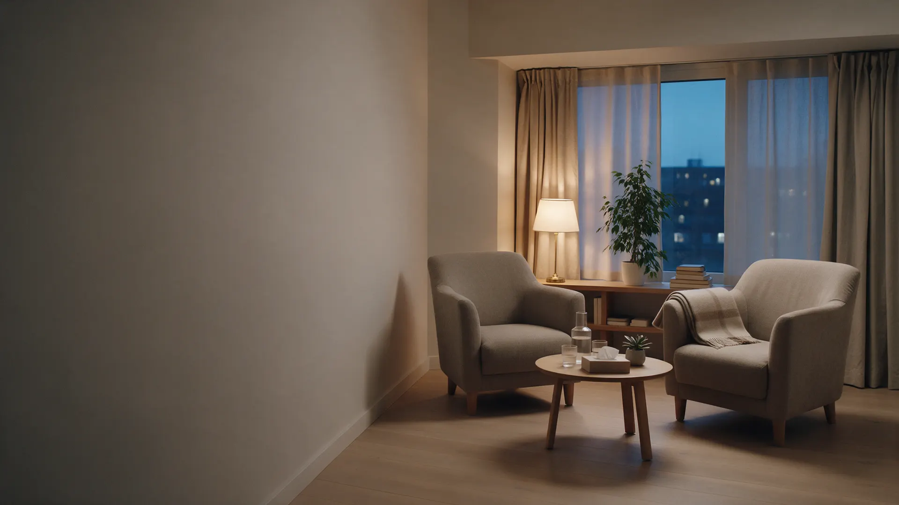

Говорю простым языком, не тороплю и не даю советов вместо вас. Вопрос «зачем мы это делаем» здесь нормальный, а не неудобный.

Приём по записи
Пн–Сб 10:00–20:00
Своё время, без спешки
Психолог · Анна Орлова
Психолог в Ярославле: формат и цена ясны до встречи
Первая встреча – знакомство и разговор о вашем запросе. Продолжать или нет, решаете вы.
- Формат и цена названы до записи
- Первая встреча без обязательств
- Очно в Ярославле и онлайн
- Сказанное остаётся между нами
Пять вопросов, которые задают до первой встречи
Отвечаем на них здесь, пока вы дома, а не когда вы уже сидите в кабинете.
- 1Нужно ли мне это?
- 2Как проходит встреча?
- 3Сколько это стоит?
- 4Кто со мной работает?
- 5Когда можно прийти?
Запросы
С какими запросами работаю
Взрослые люди, очно и онлайн. Если вашего запроса нет в списке, напишите: честно отвечу, подхожу ли вам.
Тревога и постоянное напряжение
Разбираем, что запускает тревогу, и ищем способы с ней обращаться. Без обещаний «избавиться навсегда».
очно · онлайнУсталость и выгорание
Когда сил нет, а дел много. Смотрим, на что уходит энергия и что можно изменить в вашем темпе.
очно · онлайнОтношения в паре
Повторяющиеся ссоры, холодность, непонимание. Работаем с одним человеком или с парой.
очно · онлайнСемья и родители
Сложные отношения с близкими, границы, чувство вины. Разбираем, чего вы хотите на самом деле.
очно · онлайнСамооценка и неуверенность
Привычка сомневаться в себе и сравнивать себя с другими. Ищем опоры, а не «правильные» ответы.
очно · онлайнТрудные периоды и утраты
Расставание, потеря, переезд, болезнь близких. Можно прийти, когда не хочется ни с кем это обсуждать.
очно · онлайнЖизненные решения
Смена работы, переезд, кризис «что дальше». Помогаю услышать себя, решение остаётся за вами.
очно · онлайнРодительская усталость
Раздражение, чувство вины, нехватка времени для себя. Поддержка для взрослого, а не оценка родительства.
очно · онлайн
Не нашли свою ситуацию или не знаете, как её назвать? Напишите в двух словах: отвечу, подхожу ли вам, и подскажу, к кому обратиться, если нет.
Записаться
Вопрос 1 · Нужно ли мне это?
Прийти можно, не дожидаясь «совсем плохо»
Многие откладывают, пока состояние не станет тяжёлым. Вот как это обычно выглядит.
- Сейчас
Усталость, раздражение, мысли по кругу
Работа и дела идут, но внутри постоянное напряжение. Кажется, что это ещё не повод ни к кому обращаться.
- Через месяцы
Сон, настроение, отношения
Напряжение накапливается: хуже сплю, чаще ссоры, пропадает интерес к тому, что радовало.
- Потом
Состояние управляет решениями
Выбор делается из усталости или страха. Разобраться становится труднее, чем в начале.
Поэтому
Прийти можно с любым запросом, даже если трудно его сформулировать. Первая встреча – разговор и знакомство, без обязательств продолжать.
Психолог не ставит диагнозов и не назначает лекарства. Если по вашему запросу нужна помощь врача, скажу об этом прямо.
Вопрос 2 · Как проходит встреча?
Первая встреча – просто разговор
Без анкет и «правильных» ответов. Пять шагов, на каждом вы понимаете, что происходит, и можете остановиться.
Шаг 1Знакомство
Рассказываю, как устроена работа и что остаётся между нами. Вы задаёте любые вопросы.
Шаг 2Ваш запрос
С чем пришли и чего хотите. Можно говорить неточно: уточним вместе.
Шаг 3Вопросы
Задаю вопросы, чтобы лучше понять ситуацию. На любой можно ответить: «не готов об этом говорить».
Шаг 4Формат
Как часто встречаться, очно или онлайн, сколько это стоит. Всё называю вслух и повторяю письменно.
Шаг 5Решение
Можно договориться о следующей встрече, можно подумать дома. Давить не буду.
Записаться
Первая встреча – около 50 минут. Напишите, как вам удобнее, и подберём время.

Вопрос 3 · Сколько это стоит?
Цена названа до встречи
За каждый формат отдельно. Для регулярных встреч считаем вместе и называем сумму заранее.
Первая консультация 2 500 ₽
Знакомство, разговор о запросе, обсуждение формата. Около 50 минут, продолжать необязательно.
На схеме: первая встречаСессия очно 3 500 ₽
Одна встреча в кабинете, 50 минут. Как часто встречаться, обсуждаем вместе.
На схеме: одна встречаСессия онлайн 3 000 ₽
Видеосвязь, 50 минут. Нужны интернет и место, где вас не прервут.
На схеме: онлайн-встречаПарная консультация 5 000 ₽
Для двоих, около 80 минут. У каждого есть время высказаться.
На схеме: одна длинная встречаПакет из четырёх встреч 12 500 ₽
По 3 125 ₽ за встречу. Подходит и для очных, и для онлайн-встреч.
На схеме: четыре встречи подрядВстречи по порядкуЗнакомствоДальше – ваше решение
Вопрос 4 · Кто со мной работает?
Психолог, с которым спокойно
Образование и повышение квалификации подтверждены документами, копии показываю на первой встрече по просьбе.


Как устроена работа
- Сказанное остаётся между намиСодержание встреч не передаётся третьим лицам. Исключения проговариваем при знакомстве
- Без оценок и советов вместо васПомогаю разобраться, решения принимаете вы
- Договорённости письменноФормат, цена, частота и правила переноса – в сообщении или договоре
- Можно не отвечатьНе хотите говорить о чём-то – так и скажите. Пауза и отказ здесь нормальны
Вопросы
Частые вопросы
Если вашего вопроса здесь нет, задайте его при записи: отвечу до встречи.
Чем психолог отличается от психотерапевта и психиатра?
Психолог не ставит диагнозов и не назначает лекарства. Это делает врач: психиатр или психотерапевт. Если по вашему запросу нужен врач, скажу об этом прямо.
Сколько длится встреча и как часто приходить?
Встреча – около 50 минут. Как часто встречаться, обсуждаем на первой встрече: это зависит от запроса и ваших возможностей.
Сколько встреч понадобится?
Заранее точно сказать нельзя, это зависит от запроса. На первой встрече обсудим, с чего начать, и вы сами решите, продолжать ли.
Это конфиденциально?
Содержание встреч не передаётся третьим лицам. Исключения, например угроза жизни, проговариваю при знакомстве, до начала работы.
Как проходит онлайн-встреча?
По видеосвязи в удобном вам мессенджере. Нужны интернет, наушники и место, где вас не прервут. Ссылку присылаю заранее.
Что, если я не смогу прийти?
Предупредите заранее, и мы перенесём встречу. Правила переноса и отмены называю при записи, чтобы не было сюрпризов.
Вопрос 5 · Когда можно прийти?
Оставьте заявку, подберём время
Напишите удобное время и как с вами связаться. Отвечу в часы приёма и предложу варианты.
+7 (4852) 00-00-00
ул. Свободы, 4, офис 12, Ярославль, вход со двора
Пн–Сб 10:00–20:00, приём по записи
info@orlova-psiholog.example

Первый шаг
Начать можно с одной встречи
Знакомство, разговор о запросе и честный ответ, подходим ли мы друг другу. Дальше – ваше решение.